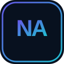
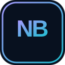
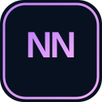
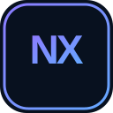
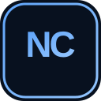

PlataformaNova Apps
Punto de entrada al ecosistema de aplicaciones Nova: herramientas, servicios y módulos conectados.
Portal informativo
Explorar proyecto →UN ECOSISTEMA · MÚLTIPLES PROYECTOS
Portal público de los proyectos oficiales de NOVA. Aquí encontrarás una descripción clara de cada servicio, su alcance y su estado real de desarrollo.
Ver proyectosPROYECTOS OFICIALES

PlataformaPunto de entrada al ecosistema de aplicaciones Nova: herramientas, servicios y módulos conectados.
Portal informativo
Explorar proyecto →Marketplace del ecosistema Nova para descubrir productos, gestionar tiendas y seguir pedidos.
PWA desplegada · pagos reales pendientes
Explorar proyecto →
Finanzas internasMódulo interno para registrar cuentas y movimientos económicos del ecosistema Nova.
Acceso restringido
Explorar proyecto →
Lectura y escrituraBiblioteca digital para descubrir novelas, consultar fichas y explorar obras por categorías.
WordPress original activo · revisión de derechos pendiente
Explorar proyecto →
EcosistemaCentro de coordinación del ecosistema Nova, con documentación y políticas internas mantenidas en repositorios privados.
Superficie pública informativa
Explorar proyecto →Proyecto editorial centrado en Cuba y la actualidad internacional, con contexto y fuentes verificables.
Portal informativo · feed editorial no activado
Explorar proyecto →
MensajeríaMensajería del ecosistema Nova para conversaciones privadas y grupos públicos o privados.
En desarrollo · aplicación pendiente
Explorar proyecto →Servicio privado para organizar archivos multimedia y conectar proveedores de almacenamiento autorizados.
API activa · conectores y pruebas pendientes
Explorar proyecto →Proyecto de inteligencia artificial de Nova, con motor local Android y una plataforma de servicios en desarrollo.
Aplicación local · backend de producción pendiente
Explorar proyecto →Este repositorio publica únicamente páginas informativas y frontends autorizados. No contiene repositorios fuente privados, credenciales, datos personales, registros de usuario ni paneles administrativos. El estado indicado en cada ficha distingue entre funciones existentes, pendientes y servicios aún no desplegados.